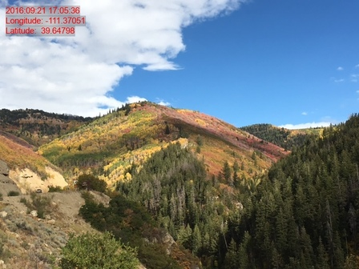

ExifTool is a comprehensive open source utility for reading, writing and editing meta information in a wide variety of file types. As noted on its project homepage:
ExifTool supports many different metadata formats including EXIF, GPS, IPTC, XMP, JFIF, GeoTIFF, ICC Profile, Photoshop IRB, FlashPix, AFCP and ID3, as well as the maker notes of many digital cameras by Canon, Casio, DJI, FLIR, FujiFilm, GE, GoPro, HP, JVC/Victor, Kodak, Leaf, Minolta/Konica-Minolta, Motorola, Nikon, Nintendo, Olympus/Epson, Panasonic/Leica, Pentax/Asahi, Phase One, Reconyx, Ricoh, Samsung, Sanyo, Sigma/Foveon and Sony.
exiftoolr wraps a local installation of ExifTool, giving users easy access to its functionality from within R. exif_read() can be used to read metadata from one or many files into a data.frame with one column per metadata field and one row per file. exif_call(), supports more general calls to the underlying ExifTool utility, examples of which are displayed here.
Example
Here is a photo taken in the La Sal mountains of southeastern Utah, USA.
Suppose you would like to annotate it with a bit of text indicating the time and place at which the photo was taken. You could do that as follows, using exiftoolr to extract the relevant data from the file, and the magick package to annotate the image:
library(exiftoolr)
library(magick)
## Read and extract image metadata
dat <- exif_read("LaSals.jpg")
DateTime <- dat[["CreateDate"]]
Longitude <- dat[["GPSLongitude"]]
Latitude <- dat[["GPSLatitude"]]
## Prepare annotation text
txt <- paste0(DateTime, "\n",
"Longitude: ", round(Longitude, 5), "\n",
"Latitude: ", round(Latitude, 5))
## Annotate image and write to file
out <- image_annotate(image_read(infile), txt,
gravity = "northwest", color = "red",
boxcolor = adjustcolor("black", alpha=0.2),
size = 15, location = "+10+10")
image_write(out, "LaSals_annotated.jpg")
Installation
To install exiftoolr from CRAN do, as usual:
install.packages("exiftoolr")To install the most recent version from GitHub, do this:
if(!require(devtools)) {install.packages("devtools")}
devtools::install_github("JoshOBrien/exiftoolr")Setup
exiftoolr can be configured to use an existing ExifTool installation. Alternatively, run install_exiftool() once following package installation to install a copy of ExifTool in the package’s directory tree, where calls to functions in the exiftoolr package will automatically find it:
exiftoolr::install_exiftool()exiftoolr makes a reasonable attempt to find local copies of Perl and ExifTool and, in most cases, will need no hints to find them. For direct control over which Perl or ExifTool is used, set their paths either with an explicit call to configure_exiftool() or with the environment variables "ET_PERL_PATH" and "ET_EXIFTOOL_PATH".
Usage
exif_read() reads metadata from one or more image files, returning the results in a plain data.frame:
library(exiftoolr)
image_files <- dir(system.file("images", package = "exiftoolr"),
full.names = TRUE)
exifinfo <- exif_read(image_files)
dim(exifinfo)
#> [1] 3 181
names(exifinfo)[1:20] ## Display first 20 metadata fields read by ExifTool
#> [1] "SourceFile" "ExifToolVersion" "FileName" "Directory"
#> [5] "FileSize" "FileModifyDate" "FileAccessDate" "FileCreateDate"
#> [9] "FilePermissions" "FileType" "FileTypeExtension" "MIMEType"
#> [13] "ExifByteOrder" "Make" "Model" "Orientation"
#> [17] "XResolution" "YResolution" "ResolutionUnit" "Software"To extract only those tags that are actually needed, use the tags argument:
exif_read(image_files, tags = c("filename", "imagesize"))
#> SourceFile FileName ImageSize
#> 1 C:/R/Library/exiftoolr/images/LaSals.jpg LaSals.jpg 640 480
#> 2 C:/R/Library/exiftoolr/images/Lizard.jpg Lizard.jpg 4032 3024
#> 3 C:/R/Library/exiftoolr/images/QS_Hongg.jpg QS_Hongg.jpg 4674 3456The tags argument also accepts simple regular expressions. For instance, to extract all fields with names containing the substring "GPS", you could use the following call:
exif_read(image_files[1], tags = "*GPS*")
#> SourceFile GPSLatitudeRef GPSLongitudeRef
#> 1 C:/R/Library/exiftoolr/images/LaSals.jpg N W
#> GPSAltitudeRef GPSTimeStamp GPSSpeedRef GPSSpeed GPSImgDirectionRef
#> 1 0 23:05:36 K 0 T
#> GPSImgDirection GPSDestBearingRef GPSDestBearing GPSDateStamp GPSHPositioningError
#> 1 107.2073 T 107.2073 2016:09:21 5
#> GPSAltitude GPSDateTime GPSLatitude GPSLongitude
#> 1 2257.414 2016:09:21 23:05:36Z 39.64798 -111.3705
#> GPSPosition
#> 1 39.6479805555556 -111.370505555556To access more general ExifTool functionality (many examples of which are shown here), use the exif_call() function. For example, the call just above, if run using exif_call(), would look something like this:
Why another R package for reading image file metadata?
Several R packages can read EXIF metadata from image files. The exif and magick packages both include functions (exif::read_exif(), and magick::image_attributes(), respectively) that extract files’ EXIF data. Often, though, EXIF tags comprise only a subset of the metadata in a file. Despite its name, ExifTool reads data stored in many additional metadata formats.
The exifr package – also a thin wrapper around ExifTool – is much more similar in the functionality that it provides. The packages differ mainly in their support for easy installation and configuration on all operating systems. exiftoolr, in particular, was designed to make it as easy for Windows users – even those without Perl installations – to access ExifTool functionality as it is for *NIX and Mac users. Relative to exifr, exiftoolr also makes it easier to update ExifTool to its most current version.